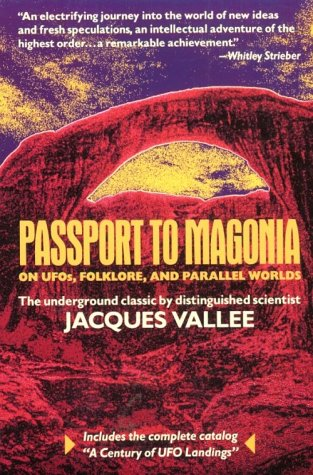

Il existe peu de gens apportant plus de crédibilité au domaine de la recherche sur les ovnis que le Dr Jacques Vallée. En tant que l'un des enquêteurs les plus respectés sur le phénomène au cours de plus de quatre décennies, il a peut-être la plus large expérience et connaissance du sujet que n'importe quelle personne vivant aujourd'hui. Cependant, le Dr Vallée apporte bien plus au domaine que sa seule expérience – il apporte aussi le crédit d'un véritable homme de la Renaissance.
Né en France, il a obtenu une licence de mathématiques à la Sorbonne et une maîtrise d'astrophysique à l'Université de Lille. Après être venu aux USA comme astronome à l'Université du Texas – où il a co-developpé la 1ʳᵉ carte informatisée de Mars – le Dr Vallée est plus tard parti à l'Université Northwestern où il a reçu un doctorat en informatique.
Il partit travailler pour SRI International et l'Institut pour le Futur, où il dirigea le projet pour mettre en place le 1er système de conférence sur réseau du monde en tant qu'Investigateur Principal sur Arpanet, le prototype de l'Internet. Il est depuis devenu un capital-risqueur à succès, et est actuellement Partenaire Général d'Euro-America, un groupe de la Silicon Valley qui investit dans l'Amérique du Nord et l'Europe, principalement en haute-technologie.
En , âgé de 16 ans, le Dr Vallée observe un ovni pour la 1ʳᵉ fois au-dessus de sa maison de Pontoise. Six ans plus tard , alors qu'il travaille comme astronome, il est témoin de la destruction de bandes sur lesquelles avaient été enregistrées le suivi d'objets inconnus orbitant autour de la Terre. Son intérêt pour le phénomène ovni devient une carrière (of sorts) lorsqu'il rejoint le Dr J. Allen Hynek dans la recheche sur le phénomène ovni pour l'enquête bien connue de l'U.S. Air Force, le projet Blue Book. Sa contribution au domaine fut reconnue par Steven Spielberg dans Rencontres du 3ᵉ Type, dans laquelle le scientifique français joué par François Truffaut fut modelé à partir de lui.
Depuis les années 1960s, le Dr Vallée a écrit une série de livres fracassants sur le phénomène ovni. Son livre de , Passport to Magonia fut capital pour changer la perspective sur les observations et expériences anormales, déterminant l'hypothèse que le phénomene était simplement la dernière incarnation de quelque chose qui s'est produit tout au long de l'histoire humaine (expliqué dans les ères passées comme des fées, démons et signes de Dieu). Le rejet du Dr. Vallée de l'explication "tôle et boulons" des ovnis (en tant que vaisseaux interstellaires) lui ont valu une réception hostile de certaines parties du domaine de recherche, l'amenant à se décrire lui-même à un moment comme "hérétique parmi les hérétiques". En il challengea à nouveau la communauté ufologique avec la publication de son livre Ovnis : La Grande Manipulation, dans lequel il avertissait contre les dangers de cultes liés aux ovnis, la tromperie gouvernementale, et la nature trickster du phénomène.
Le Dr Vallée continue d'enquêter sur les "phénomène en marge" sur son propre temps, autour du monde. Il occupe aussi une place dans le comité de conseil scientifique de Bigelow Aerospace à Las Vegas, dans le Nevada.
